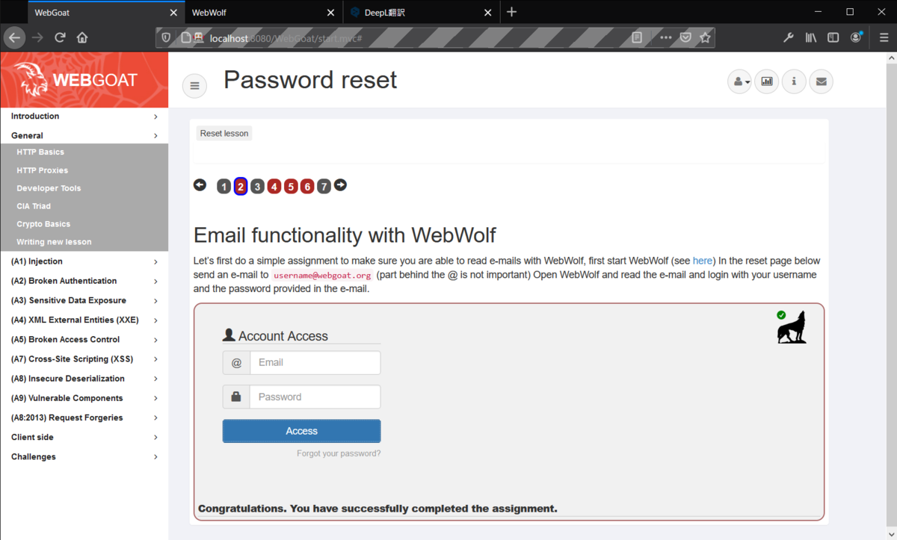

WebGoat-12: Password reset
パスワードリセット機能の脆弱性について学ぶ。
Page 2
webwolfを使う必要があるようなので、公式のgithubに従って新たにdockerイメージを導入。
> docker run -d -p 80:8888 -p 8080:8080 -p 9090:9090 -e TZ=Asia/Tokyo --name webgoatwolf webgoat/goatandwolf:latest
localhost:9090/WebWolfにアクセスして、WebGoatのアカウント情報を入力。
WebGoatのほうに戻って、ひとまずおれが設定しているWebGoatのアカウントのユーザ名：aaaaaaに@webgoat.orgを連結させて入力、パスワード：111111を入力してみるが、だめだった。
Forgot your password?をクリックし、Continueをクリックしたらメールが送られた。WebWolfのメールボックスから確認できるらしい。
こちらが件のメール。
平文やないか。しかもこれ、サーバ側がユーザ名をそのままパスワードとして使いまわしているな？
これをWebGoatのログインページに入力して問題クリア。問題ごとの難易度の差がひでえ。
Page 4
パスワードリセット機能を使って他ユーザのパスワードを取得せよ、という問題。あなたの好きな色は？という秘密の質問に答えたらパスワードを取得できる。
とりあえずからいろんな色を総当りで入力してみると、Tomはpurpleが答えのようだ。

同じくlarryはyellowでadminはgreen。人力での総当りだが、所要時間は5分もかかっていない。WebGoatにログインするたびに答えはランダムになるのかとかは検証していない。
探索空間が非常に狭いような質問はやめましょう。
Page 5
コンボボックスの項目を2つ選ぶだけ。要は「秘密の質問」にふさわしいもの（ユーザには覚えやすく、ハッカーには推測しづらい）なんてそうないということだ。
Page 6
わからん。